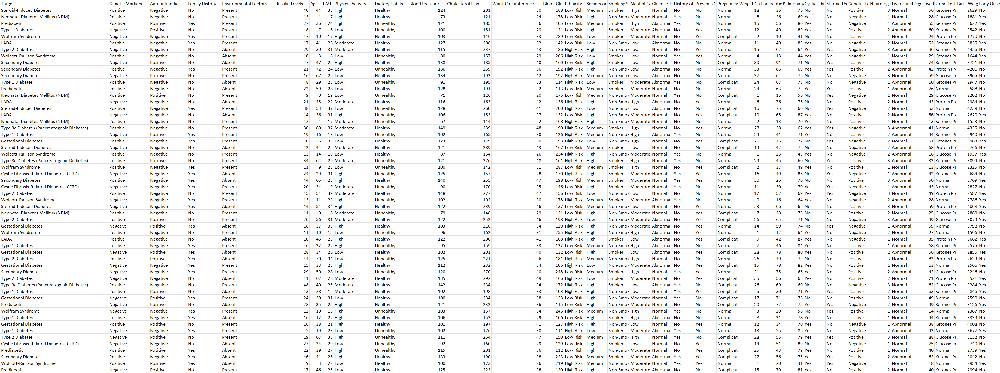

Data Acquisition from Kaggle API
To fetch our dataset, we used the Kaggle API. Below is a step-by-step breakdown of how we installed Kaggle, set up authentication, and downloaded the dataset.
Step 1: Install the Kaggle Package
!pip install kaggle
This command installs the Kaggle Python package, which allows us to download datasets directly from Kaggle.
Step 2: Configure Kaggle API Key
mkdir -p ~/.kaggle # Create the .kaggle directory
mv kaggle.json ~/.kaggle/ # Move API key file to the correct directory
chmod 600 ~/.kaggle/kaggle.json # Secure permissions
We first create a **.kaggle** directory and move our Kaggle API key (`kaggle.json`) into it. Then, we set permissions to prevent unauthorized access.
Step 3: Download the Dataset
kaggle datasets download -d ankitbatra1210/diabetes-dataset
This command downloads the **Diabetes Dataset** from Kaggle into our working directory.
Step 4: Extract the Dataset
import zipfile
with zipfile.ZipFile("diabetes-dataset.zip", 'r') as zip_ref:
zip_ref.extractall("diabetes_data")
print("Dataset extracted successfully!")
Since Kaggle datasets are downloaded as ZIP files, we use Python’s zipfile module to extract it into the **diabetes_data** folder.
Data Cleaning Steps
After acquiring the dataset, we performed essential cleaning steps to ensure the data was ready for analysis.
Step 1: Load the Dataset
import pandas as pd
# Load dataset
df = pd.read_csv("diabetes_data/diabetes.csv")
# Display first few rows
df.head()
We first load the dataset using Pandas and inspect the first few rows.
Step 2: Handle Missing Values
# Check for missing values
df.isnull().sum()
# Fill missing values with the median (or drop rows if necessary)
df.fillna(df.median(), inplace=True)
We check for missing values and use **median imputation** to fill them.
Step 3: Remove Duplicates
# Remove duplicate rows
df.drop_duplicates(inplace=True)
Duplicate records can distort analysis, so we remove them.
Step 4: Normalize Numerical Features
from sklearn.preprocessing import MinMaxScaler
scaler = MinMaxScaler()
df[['Glucose', 'BMI', 'Insulin']] = scaler.fit_transform(df[['Glucose', 'BMI', 'Insulin']])
To standardize the dataset, we use **MinMaxScaler** to normalize key numerical features.
Step 5: Save the Cleaned Dataset
# Save cleaned data
cleaned_file_path = "data/diabetes_cleaned.csv"
df.to_csv(cleaned_file_path, index=False)
print("Cleaned dataset saved successfully!")
Finally, we save the cleaned dataset for further analysis.
Raw vs. Cleaned Data
Click the dataset image to preview the first few rows.
Raw Dataset
Cleaned Dataset

Exploratory Data Analysis (EDA)
Here are key insights from our data, visualized through various plots.